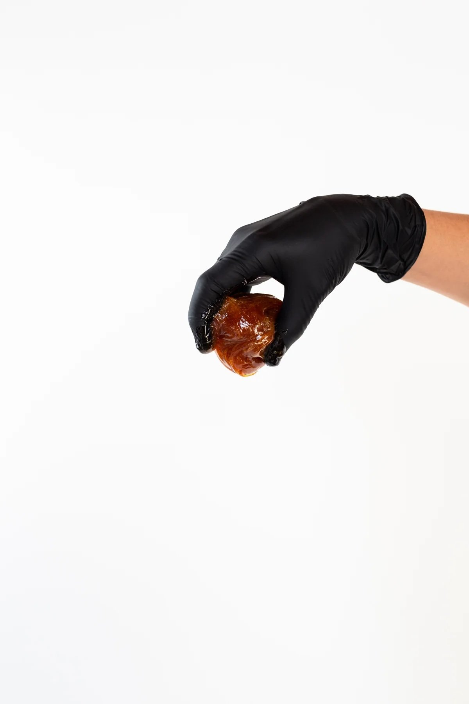

Sweet Success: Your Guide to Brazilian Sugaring

Hadiyah Daché, licensed esthetician
Sugaring • Body • Hair Removal
4 min
← All articlesThe Book →If you've ever left a waxing appointment feeling like you just survived a medieval torture session, this one's for you.
We all love the results of our monthly wax down below but, let’s be honest, it hurts like hell! While hair removal on other parts of our body barely cause us to flinch, we’ve got to admit that brazilian hair removal can feel like more than a pinch sometimes. Maybe you seek out shaving as an alternative out of respect for your pain tolerance but now you find yourself having to deal with ingrown hair and itchiness. Luckily there is a solution for you!
Enter sugaring: the 3000-year-old Egyptian hair removal method that's making everyone rethink their relationship with waxing.
The Science Behind the Sweet Stuff
Yes, brazilian sugaring is scientifically proven to be better for your skin (and especially your intimate areas) than hard and soft wax methods. At its core, sugar paste is a precise blend of organic sugar, lemon juice, and water. That's it. No artificial preservatives, no synthetic resins, no chemical additives. This makes it not only vegan-friendly but also ideal for sensitive skin, sensitive areas of the body, and those prone to allergic reactions.
But the real magic of sugaring lies in how it works with your body's natural hair growth cycle. Each of your hair follicles goes through three phases: anagen (growing), catagen (transitional), and telogen (resting). Traditional waxing often disrupts this cycle by traumatizing the hair follicle bulge—a critical region containing stem cells responsible for regeneration and healing. When this bulge is repeatedly damaged, it leads to inflammation, ingrown hairs, and sometimes even permanent scarring.
Sugaring takes a dramatically different approach. The paste penetrates deeper into the follicle while being gentler on the skin, removing hair from the bottom of the hair follicle while preserving the integrity of the follicle bulge. This is achieved through two key mechanisms: First, the sugar paste only adheres to the hair shaft itself, unlike wax which bonds to living skin cells and the hair. Second, and crucially, the hair is removed in its natural direction of growth, reducing trauma to the follicle and preventing breakage.
With consistent sugaring treatments, many clients report noticeably reduced hair regrowth over time. This is because proper sugar hair removal targets the hair in the early anagen phase, gradually weakening the follicle's ability to produce new hair without causing the inflammation that often triggers increased hair growth as a stress response. While individual results vary, regular maintenance sessions typically lead to finer, sparser hair growth patterns.
"But Does Sugaring Hurt?" - The Million Dollar Question
Any hair removal method is going to have some sensation. But there's a big difference between a quiet "ouch!" and screaming "HOLY F%¢#!" Sugaring typically falls into the first category. Here's why: that directional removal we talked about makes a huge difference in pain levels. Plus, the sugar paste is applied at body temperature, unlike hot wax that can burn sensitive areas (we've all been there, and we never want to go back).
If it’s your very first time getting sugared then the process may feel the exact same as getting waxed. But the beauty in brazilian sugaring is that, with consistency, pain is minimal to none. This is primarily due to the method of removal AND the hairs becoming more sparse over time. The thinner the hair, the less you feel the removal. Our new sugaring clients love the service and by the third appointment, they usually report little to no discomfort. You will absolutely love brazilian sugaring with us at Glowdega in Oakland!
Bare Economics: Our Sweet Deal Structure
Let's talk numbers, because we know you're wondering. We believe in transparent pricing and maximum value here at Glowdega. Here's what we offer:
Our BLOOM package is your perfect introduction. It includes three Garden brazilian sugaring sessions designed to get you through that initial adjustment period, saving you $11 per service. Think of it as your skin's training wheels.
For the committed (and brilliant) folks who know they want year-round smoothness, our SUGAR HARVEST package is the golden ticket and priced at $555. One brazilian sugar service every 6 weeks for a full year, ensuring you're maintained to perfection while maximizing your savings. As your hair adapts to the regular schedule, you'll see progressively better results.
And for those who love flexibility? Our membership program at $68/month keeps you smooth without the commitment anxiety. You can apply for our membership here.
The Glowdega Difference: Why We're Oakland's Sugar Specialists
We're not just another hair removal spot—we're sugaring artisans. Our specialists are trained in the precise application techniques that make brazilian sugaring not just effective, but actually kind of enjoyable (yes, really). We don’t upcharge for ingrown hair removal and we sugar all bodies. That means, yes, people with male genitalia are welcome here. And, probably most importantly, we’re quick! Your first brazilian sugaring session with us is usually the longest (around 30 minutes) but maintenance sugaring sessions can be as quick as 10 minutes!
If you've made it this far, you're probably thinking about giving sugaring a try. Here's our advice: start with our BLOOM package. It's specifically designed for first-timers, giving you the perfect introduction to what could be a life-changing switch in your hair removal routine.
Let us tend to your GARDEN, book your first brazilian sugaring with us in Oakland today and discover why our clients are saying goodbye to wax for good. Give your body the sweet treatment it deserves.